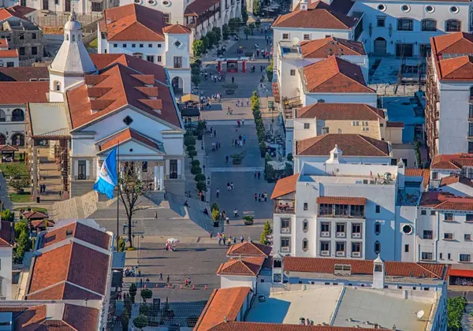

Welcome to Guatemala Chamber of Commerce
Nestled in the heart of Central America, Guatemala is a country rich in cultural heritage, natural beauty, and economic potential. As one of the most diverse countries in the region, Guatemala boasts a vibrant mix of indigenous traditions, colonial history, and modern development. Guatemalan is committed to creating a favorable business environment. Various incentives and reforms are in place to attract foreign direct investment, including tax benefits, free trade zones, and streamlined business regulations. Key areas of opportunity include renewable energy, infrastructure development, and technology.
Weather
Wind Speed: mph
Wind Chill:
Upcoming Events In Guatemala
September 15th - Independence Day
October 20th - Revolution of 1944
November 1st - All Saint's Day
Click Here to find more events!Tikal National Park
Located in the northern region of Petén, Tikal National Park is home to one of the most significant archaeological sites of the ancient Maya civilization. The park is a UNESCO World Heritage Site, featuring towering pyramids, temples, and palaces set amidst a lush rainforest. Highlights include Temple IV, which offers stunning views over the jungle canopy, and the Great Plaza, surrounded by impressive structures.
Antigua Guatemala
A UNESCO World Heritage Site, Antigua Guatemala is a beautifully preserved colonial city surrounded by volcanoes. Known for its cobblestone streets, colorful buildings, and historic churches, Antigua offers a glimpse into Guatemala’s colonial past. Key attractions include the Santa Catalina Arch, the ruins of the Church of La Merced, and the vibrant Central Park.
Guatemala City
As the capital and largest city of Guatemala, Guatemala City is the political, cultural, and economic center of the country. Key attractions include the National Palace of Culture, the Metropolitan Cathedral, and various museums such as the National Museum of Archaeology and Ethnology. The city also serves as a gateway to other parts of the country, with modern amenities and services for travelers.